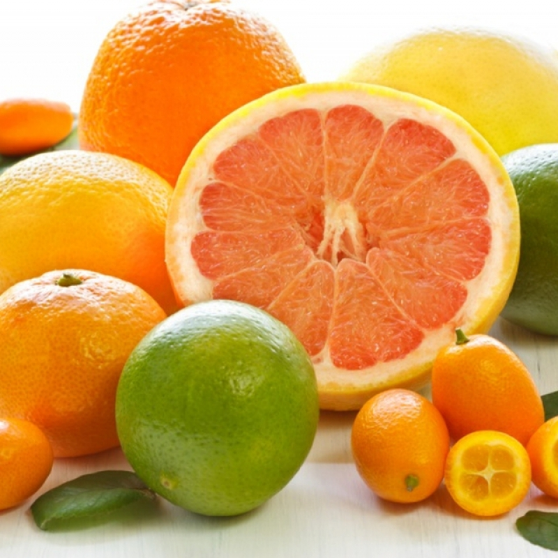

Яку дієту обрати для схуднення, але при цьому, щоб вона не була шкідливою для здоров'я? Це питання, яким задаються мільйони людей у всьому світі, в тому числі - в Україні. На ринку існує безліч дієт, які обіцяють швидке схуднення всього за кілька днів або навіть тиждень. Однак, більшість з них можуть призвести до негативних наслідків для здоров'я. Наприклад, кавова дієта з яйцями передбачає випивання трьох чашок чорної кави на день, та споживання до 1200-1500 калорій на день. Це здебільшого яйця, нежирні білки, фрукти і овочі з низьким вмістом вуглеводів. Таке харчування протягом тривалого часу може призвести до дефіциту вітамінів і мінералів, що може вплинути на імунітет і загальний стан організму. Щоб визначити, як найкраще схуднути, порадьтеся з лікарем.
Один із способів швидко схуднути - скоротити споживання цукру, крохмалю або вуглеводів. Цього можна досягти завдяки дієті з низьким вмістом вуглеводів або зменшивши кількість рафінованих вуглеводів і замінивши їх цільнозерновими продуктами.

Це може допомогти приборкати апетит, знизити рівень інсуліну і змусити вас схуднути. При низьковуглеводній дієті ви будете використовувати накопичений жир для отримання енергії замість вуглеводів.
Якщо ви вирішите їсти цільнозернові продукти з дефіцитом калорій, вам це піде на користь, оскільки в цих продуктах багато клітковини і ви повільніше перетравлюватимете їх. Завдяки цьому ви довше залишатиметеся ситими. Дослідження також показують, що дієта з низьким вмістом вуглеводів може знизити апетит, що може привести до споживання меншої кількості калорій. Але довгострокові ефекти низьковуглеводної дієти ще не відомі, тому з нею треба обережно.
Не бійтеся їсти жири. Вашому організму необхідні здорові жири, незалежно від того, який план харчування ви виберете. Оливкова та авокадова олія і олія авокадо - чудовий вибір. Інші жири, такі як масло і кокосова олія, варто використовувати тільки в помірних кількостях через більш високий вміст насичених жирів.
Їжте сніданок з високим вмістом білка. Сніданок з високим вмістом білка може допомогти знизити потяг до їжі.
✅ Уникайте солодких напоїв і фруктових соків. Їхні калорії можуть перешкоджати зниженню ваги.
✅ Пийте воду перед їжею. Дослідження показало, що вживання води перед їжею знижує споживання калорій і може бути ефективним для контролю ваги.
✅ Пийте каву або чай. Споживання кофеїну може пришвидшити ваш метаболізм.
✅ Їжте цільнозернові продукти. Вони більш здорові, ситні і з набагато меншою ймовірністю спричиняють переїдання.
✅ Їжте повільно. Швидке харчування з часом може призвести до збільшення ваги, в той час як повільне харчування змушує вас відчувати себе більш ситим і підвищує рівень гормонів, що знижують вагу.
✅ Добре спіть. Сон важливий з багатьох причин, і поганий сон є одним з найбільших факторів ризику збільшення ваги.
Мошовська Ольга